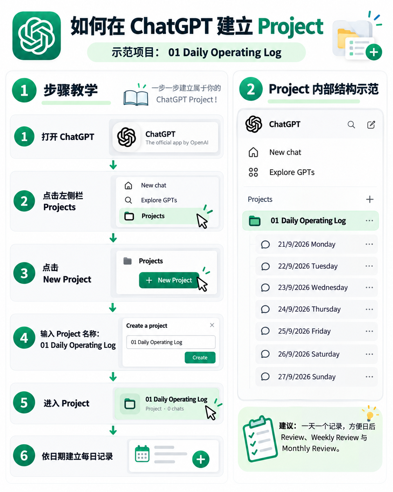
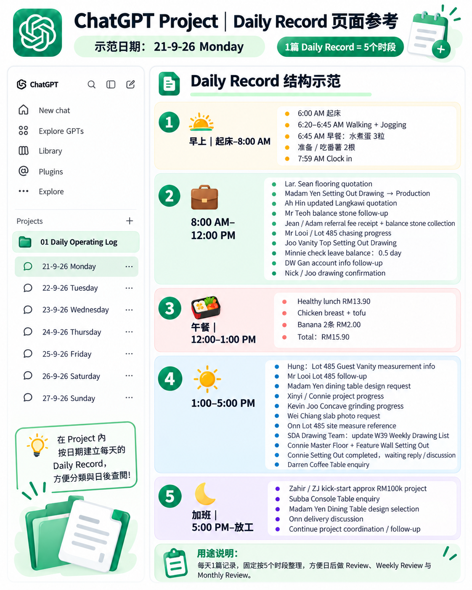
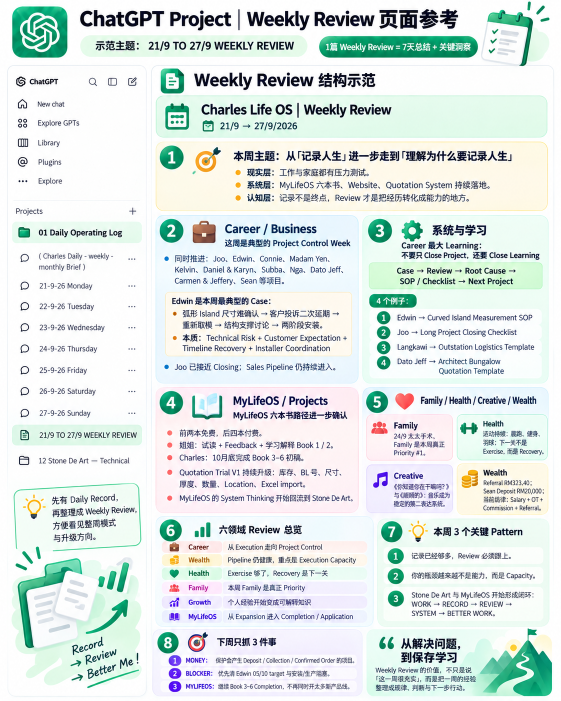
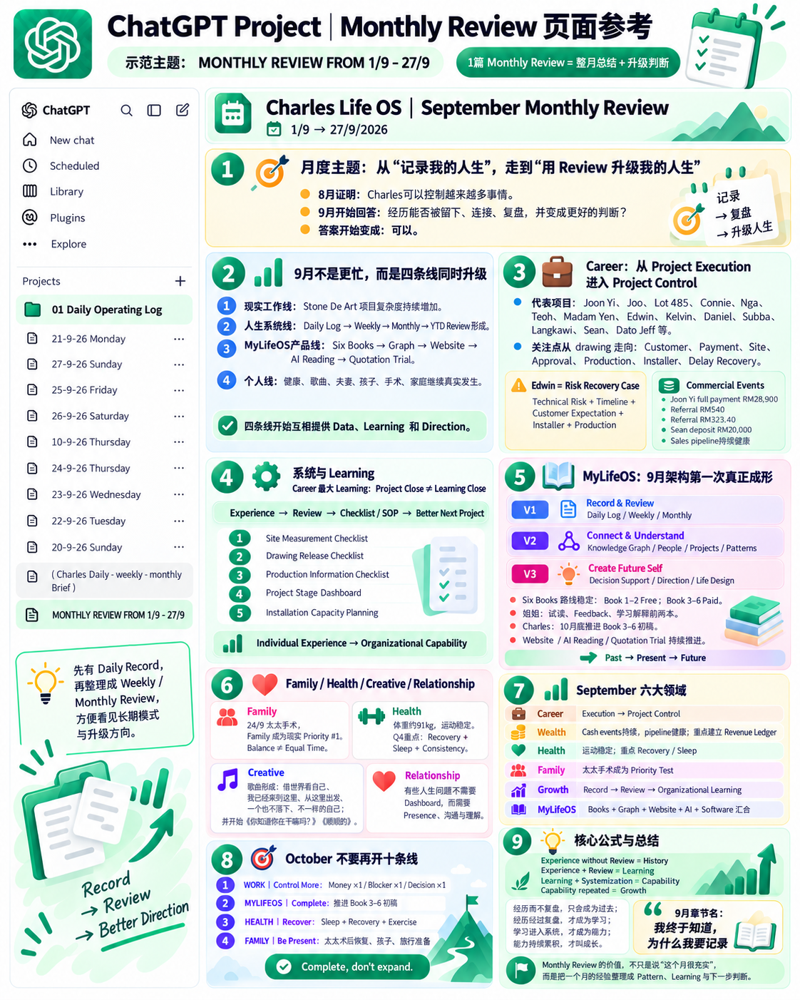
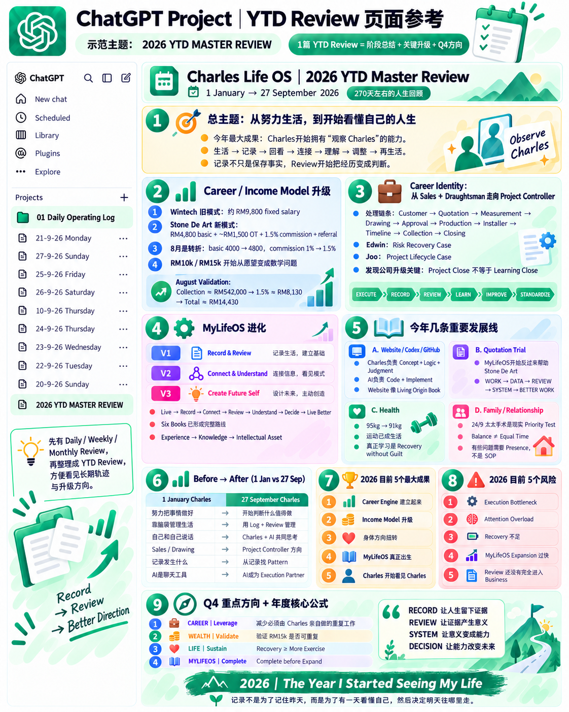

BOOK 3 · 1 / 12
序章 给认识自己一个可以继续的方法
第一本，我讲自己为什么开始记录。第二本，我从记录里继续认识自己。第三本把这种认识变成可以持续使用的方法。
最前面的总览就是这本书的地图。先看完整过程，再逐章理解每个部分怎样连接。读者不需要一次完成全部栏目，也不需要复制我的生活。
我曾不清楚留下那么多记录到底有什么用。等到回顾把散落的事情放在一起，我才看见它们能够帮助我理解现在，给下一步提供依据。
接下来，从一个入口、一条记录开始，走到一次回顾，再把理解带回生活。
BOOK 3 · 2 / 12
第一章 What Is MyLifeOS 理解这套系统
MyLifeOS 是我整理个人生活的一套方法，把健康、财富、家庭、事业、学习和日常生活连接起来，持续回看。
它帮助我知道发生了什么、自己怎样选择，以及下一步有什么可以调整。ChatGPT 协助整理和比较，我负责核对与决定。
总览中的过程有六步：设置背景，留下记录，整理资料，进行回顾，理解联系，尝试改善。每一步为下一步提供材料，行动的结果又回到新的记录。
记录的目的，是在需要作判断时有依据。理解了这一点，后面的图表就有了共同的方向。
BOOK 3 · 3 / 12
第二章 Setup Your ChatGPT 建立背景与入口
开始时，我先说明希望怎样被称呼、正在关注什么、承担哪些角色，以及希望记录帮助解决的问题。
用几句话介绍工作、家庭、兴趣与目标，列出六个生活领域即可。不必一次提供全部私人细节；背景变化时继续补充。
我会把这些内容整理成简短的个人背景说明，核对后保存。回顾前确认当前对话是否取得这些资料。背景帮助理解记录，不能替代实际发生的事情。
我把日常资料放在“01 Daily Operating Log”里。每天以日期和星期命名聊天，回头要找某一天，就有明确的位置。

图一：建立记录入口。右边的七个日期是聊天命名示范，并非建立项目后自动生成的记录。
图的左边展示建立项目的顺序，右边展示组织后的样子。实际操作时，找到创建项目的入口，命名后进入，再按日期建立每天的聊天即可。界面可以变化，结构不复杂：一个固定位置，一天一条记录线索。
回顾可以另设聊天。我现有的日、周、月回顾入口，与每天的记录放在同一项目下，方便查找。开始回顾之前，仍要确认 AI 实际收到哪些资料；放在同一个项目，不等于每次都已经读取全部内容。
有了入口，下一步就不是继续整理文件夹，而是把生活放进来。
BOOK 3 · 4 / 12
第三章 Daily Log System 用五个时段留下一天
一天的内容不一定一次写完。我可以在事情发生后，留下一句话、一段语音或一张图片，晚上再整理。

图二：以九月二十一日星期一为示范日期，按早上、上午、午餐、下午和加班五个时段组织内容。
这张图让我看见一天的节奏：起床与生活准备，进入工作，中午停顿，下午继续，最后收尾。时段帮助材料排列，不要求每个人都有一样的作息。没有加班，可以换成晚间；当天没有内容的部分，也不必补满。
图里的客户和任务属于我的工作环境。读者需要学会的是怎样留下事件与状态，不是复制这些项目名称。一次沟通、一次运动、一顿饭，都可以成为记录。
例如，我在九月二十二日留下过下午一点二十分到达办公室的文字。这已经是一条可用的材料。它没有说明之后完成了什么，就不需要为了丰富而补写。
Daily Record 和 Daily Log，在本书都指日常记录：先把事情留下，再讨论它意味着什么。
BOOK 3 · 5 / 12
第四章 Organize 整理以后还要核对
GPT 可以把零散输入按时段排列，让原本分散的材料变得容易阅读。这个步骤很有帮助，但整齐不等于准确。
九月二十二日，我补充过一条更正：午餐记录应归到九月二十三日。如果整理只看最早的内容，忽略后来的说明，就会把事情放错一天。
所以，我会保留原文，也保留更正。核对的重点很具体：日期是否正确，计划是否被写成完成，感受是否被当成事实，后续解释是否遗漏。
一条记录可以包含“发生了什么”“我怎么想”“准备怎样做”，但这三件事要分得清。资料不足的地方就留空或注明待确认。
AI 帮助我组织材料，我负责确认它是否仍然表达我的生活。这一步做好，后面的回顾才有可靠的起点。
总览里的提醒在这里落地：不追求第一次就完整；文字、语音和照片都可以输入；先留下，再核对。用户提供材料，GPT 协助整理，用户补充修正。不能准确读取的图片或语音，可以补上文字说明。
BOOK 3 · 6 / 12
第五章 6 Life Areas 看见生活的不同部分
总览使用六个领域：Health OS 健康、Finance OS 财富、Family OS 家庭、Career OS 事业、Learning OS 学习成长，以及 Personal Life OS 个人生活。
学习成长保留输入、反思与能力变化，个人生活保留兴趣、体验和日常节奏。它们对应前两本的六大领域。创作、关系或 MyLifeOS 项目可以作为相关主题展开。
九月二十六日，我写到冲凉、洗衣和看动漫，也留下家人在帮助别人处理手机充值的片段。这样的记录让回顾不只看见工作，还看见普通生活。
同一件事可以关联多个领域，但不用重复计算。一段陪伴既关乎家庭，也可能影响自己的感受。分类应当保留这种联系，而不是把生活拆得越来越碎。
当记录有了日期、状态和基本位置，我就可以开始理解这一天。
BOOK 3 · 7 / 12
第六章 Daily Review 看清今天的选择
Daily Summary 把一天整理清楚，Daily Review 再问：今天哪些事情值得理解，哪些需要跟进？
九月二十五日，我谈到担心过去懒惰的状态回来。随后又解释，其实只是累了，在沙发上睡了一下，恢复以后继续做事。我也说，自己觉得生活充实，正在积极进步。
这段材料不需要长篇分析。事实是短暂休息；当时的感受是担心；后来的补充说明，帮助回顾避免把休息直接解释成退步。
一个简短的日回顾，就可以保留这三个层次，再看看有没有待处理的事情。当天没有需要调整的地方，也可以只是确认哪些做法值得继续。
回顾既能发现问题，也应该保留满意的部分。能把今天看清楚，就不必再给整个人打一个分数。
BOOK 3 · 8 / 12
第七章 Weekly Review 把几天连接起来
一天里看不清的问题，放到一周可能出现联系。周回顾的重点，是从记录中选出值得继续观察的事情，再决定下一周怎样做。

图三：七天材料汇成一份周回顾。先看本周主题，再看领域与案例，最后看关键模式和下周重点。
这张图不用从每个客户名字开始读。先读顶部的主题，再看中间“系统与学习”，最后看“下周只抓三件事”，就能抓住主线：事情发生了，留下什么经验，经验怎样影响下一次行动。
其中一个重要想法，是项目结束以后，学习还可以继续。某次问题值得回顾，就进一步找原因，尝试把经验整理成检查表或工作方法。图中的这些转化方向，不能仅凭列在图上就当作全部已经完成。
把这一周的原始文字放在一起，也能得到一个小而具体的示范：二十二日我更正记录日期，二十五日我补充休息的情境。两件事共同提醒我，回顾前需要读到后续解释。
由此提出的下一周尝试，可以只是“整理前检查更正”。这是本次编辑根据材料提出的示范行动，是否有效，要等后续记录检验。
书里只需保留这些必要片段。七天材料是回顾的依据，不必变成七天流水账。一个发现有依据，一个调整能实行，周回顾就有了用途。
BOOK 3 · 9 / 12
第八章 Monthly 与 YTD 拉远距离看方向
Monthly Review 看方向与取舍
当几周的内容放在一起，我开始问更长一点的问题：哪些变化正在持续？哪些问题只是在反复处理？下个月该把精力放在哪里？

图四：截至九月二十七日的月度回顾，覆盖九月一日至二十七日，并非完整九月份的最终报告。
图里把工作、人生系统、MyLifeOS 作品和个人生活放在一起。这样看，月度回顾就不只是计算做了多少事，而是观察这些部分怎样互相影响。
阅读时，可以先看月度主题，再看各条线发生什么变化，最后看十月的重点。案例和数字帮助支持判断，却不需要在正文里逐项重述。
如果周回顾提出检查更正，月度回顾就可以回头看：这个方法是否持续使用？是否减少错误？若没有留下结果，只能说仍待观察，不能把愿望写成改善。
月底的安排可以简单到三种取舍：继续、调整、暂缓。月度回顾帮助我为下个月腾出位置。
YTD Review 从年初看到现在
YTD 是从当年年初到所选日期的累计回顾。它比月度回顾再退后一步，帮助我看见较长时间里的变化。

图五：2026 年一月一日至九月二十七日的阶段回顾，不是完整年度总结，也不包含九月最后几天。
这张图最值得先看的，是年初与当前的对照。图表把“努力把事情做好”与“开始判断什么值得做”、“记录发生什么”与“从记录寻找模式”放在一起，表达我希望理解的变化。
这样的对照是一种回顾判断。要让它站得住，需要找回不同时间的记录，而不是只因为今天感觉不同，就重新替过去写一个故事。
因此，YTD 可以围绕三个问题展开：哪些变化有具体依据？哪些困难还在？下一阶段准备把注意力放在哪里？图中成果、风险和第四季度方向，就分别承担这些作用。
年初到现在的回顾，让第二本“我是谁”的问题再次回来。我看见的不只是今天的状态，还有自己正在怎样变化。之后要成为怎样的人，也开始有了现实的起点。
BOOK 3 · 10 / 12
第九章 Understand 与 Improve 把回顾变成行动
从每日到 YTD，时间越来越长，最后仍然要回到可以行动的地方。
周回顾可能带来一个检查习惯，月度回顾可能让我暂缓某个项目，YTD 则帮助我重新选择下一阶段的重点。方向可以大，眼前的一步需要清楚。
为一个调整写下：准备改变什么，何时尝试，以及用什么结果检查。开始以后，把结果放回日常记录。
图表里的“完成之后再扩展”，就可以转成一个选择：先让当前一本书达到可审阅的程度，再决定是否增加新内容。它提供的是行动方向，是否做到了仍由后续记录说明。
经验不会仅因被总结就自动成为能力。要经过尝试、检查和修正，方法才会逐渐成为自己的。
BOOK 3 · 11 / 12
第十章 7-Day Starter 完成第一次循环
总览的七天计划，是一个可以开始的顺序。它不要求每个人以同样速度得到相同结果。
第一天：建立项目和个人背景说明，写下希望系统帮助的问题，让资料有固定入口。
第二天：开始 Daily Log，留下几条真实事件，日期、事情与状态清楚即可。
第三天：尝试语音或照片记录，核对整理结果，选择适合自己的输入方式。
第四天：留意自然发生的消费、健康、工作或其他领域的事情，没有发生的内容不用补满。
第五天：选一天做 Daily Review，区分事情、感受与下一步。
第六天：补充解释，修正日期与分类，也检查个人背景是否需要更新。
第七天：把实际留下的材料放在一起做 Weekly Review，选一个下周可以尝试的小调整。资料只覆盖部分日期，就注明范围。
七天之后，检查自己能否找到原文、核对整理稿、说出一个有依据的发现，以及一个清楚的下一步。这些是初步运作的迹象；月度与 YTD 回顾，等更长时间的资料累积后再进行。
图表提供入口，自己的生活决定哪些栏目需要留下。第四本继续讨论，忙碌、中断和临时变化发生时，怎样让这套方法服务生活。
BOOK 3 · 12 / 12
尾声 从留下来 到用起来
最早，我不想让发生过的生活就这样消失。后来，我开始发现，留下来的材料还可以帮助我作出新的判断。
一天、一周、一个月，从年初到现在，是看同一个人生的不同距离。每次回头，都可以带着一点理解，再走回眼前的生活。
这就是 MyLifeOS 诞生的过程。记录让我有依据，回顾让我看见联系，行动让理解继续发生。